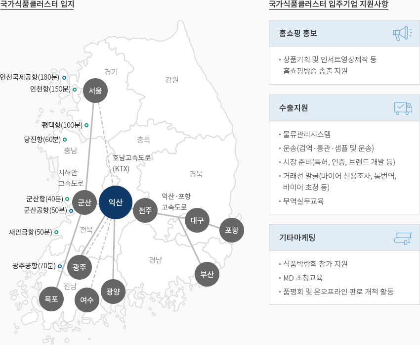

식품
- Home
- Why KOREA
- 산업
- 식품
식품
Food
-
높아지고 있는 한국 가공식품의 글로벌 위상 내용닫기높아지고 있는 한국 가공식품의 글로벌 위상한국 식품시장은 2019년 기준 1,287억 달러 규모로 글로벌 식품시장의 1.9% 수준이나,
최근 중국 및 아세안 등 신흥국 시장 성장과 한국 가공식품에 대한 글로벌 수요 확대에 따라
수출이 빠르게 증가하면서 성장세를 지속하고 있다.동남아 및 중화권 시장을 중심으로 한 한국산 가공식품의 높은 수요와 지정학적 입지 요건의 장점 등을
토대로 한국 식품산업은 내수 중심에서 수출 비중을 점차 증가시키면서 산업 외형이 지속적으로 확대 중이다.적극적인 해외 진출과 수출 증가, 고부가가치 제품 중심의 수출 구조, 자유무역협정 확대, 해외기업과의
적극적 제휴 확대 등을 토대로 성장세를 확보하였다.최근에는 1인 가구 증가 등 인구구조 변화에 적극 대응하면서, 다양한 수요에 부응하기 위한 신제품 개발을 활성화하고 있다.
코로나19를 계기로 비대면 유통채널이 확산되면서 가정간편식은 식품산업의 새로운 성장동력으로 자리매김하였다."가정 간편식 분기별 판매 현황"(단위 : 백만원, %)가정 간편식 분기별 판매 현황 표로 분기별, 합계 정보제공 분기 즉석조리식품 냉동간편식 합계 1/4 65.8 34.2 369,344 2/4 60.3 39.7 324,136 3/4 57.9 42.1 406,111 4/4 60.5 39.5 414,949 1/4 63.1 36.9 453,117 2/4 60.2 39.8 415,610 3/4 57.8 42.2 484,359 4/4 59.0 41.0 497,392 1/4 60.4 39.6 526,507 2/4 56.3 43.7 462,588 3/4 54.1 45.9 544,934 4/4 54.8 45.2 535,225 1/4 57.1 42.9 550,422  ※ 자료 : 농림축산식품부·한국농어촌식품유통공사(2020), “2019 가공식품 세분시장 현황-간편식시장”
※ 자료 : 농림축산식품부·한국농어촌식품유통공사(2020), “2019 가공식품 세분시장 현황-간편식시장” -
식품산업 안정적 성장세를 유지 내용열기식품산업 안정적 성장세를 유지한국 식품산업(식료품+음료)은 70년대 이후 경제 성장과 가계 소비지출 확대에 힘입어 지속적으로 성장하였으며
2019년 기준, 한국 식품산업 생산 규모는 96.5조원으로 2007년 이후 연평균 5.9%의 추세로 성장하였는데,
이는 같은 기간 제조업(4.2%) 대비 높은 수준이다. 제조업에서 차지하는 식품산업 비중도 꾸준히 증가하여
사업체수, 생산액, 부가가치 모두 2007년 대비 증가하였다."가정 간편식 분기별 판매 현황"(단위: 개, 10억 원, %)가정 간편식 분기별 판매 현황 표로 2007, 2016, 2019, CAGR(‘07→’19) 정보제공 2007 2016 2019 CAGR
(‘07→’19)사업체수 개 4,257 5,274 5,797 2.6% 제조업 대비 비중(%) 6.9 7.7 8.3 생산액 10억원 48,727 86,682 96,500 5.9 제조업 대비 비중(%) 5.1 6.1 6.2 부가가치 10억원 19,473 32,125 35,904 5.2 제조업 대비 비중(%) 5.9 6.5 6.4 ※ 출처 : 통계청 광업제조업조사2020년 기준 한국 가공식품의 수출 규모는 61.4억 달러로 전체 농수산식품 수출 중 62.2%를 차지한다."가공식품 수출 추이"가공식품 수출 추이 표로 년도별, 가공, 수산, 신선 정보제공 구분 2011 2012 2013 2014 2015 2016 2017 2018 2019 2020 가공 43.3 45.4 45.2 50.3 50.7 53.6 57.3 56.5 56.4 61.4 수산 23.1 23.6 21.5 20.7 19.2 21.3 23.3 23.7 25.0 23.0 신선 10.5 11.1 12.1 11.5 10.4 11.1 11.0 12.8 13.8 14.3 총 76.9 80.1 78.8 82.5 80.3 85.9 91.5 93.0 95.3 98.7
※ 자료: 농림축산식품부(2020), “농림수산식품 수출입동향 및 통계”중국, 미국, 아세안 등 주력 수출시장에서의 한국산 가공식품 수요가 견조한 가운데 코로나19 등으로 인한
간편식 수요 증가에 힘입어 수출 규모는 꾸준히 증가 중(2010년 이후 연평균 6.8% 증가)이며, 과자류, 면류 등
전통적 주력 수출품과 더불어 소스류에 대한 글로벌 수요가 확산되면서 전체 가공식품 수출이 증가하였다." 품목별 가공식품 수출 추이 "(단위 : 천불, %)품목별 가공식품 수출 추이 표로 2019, 2020, 증감 정보제공 2019 2020 증감 과자류 440,895 518,713 17.6 면류 612,041 792,255 29.4 음료 421,997 410,420 △ 2.7 주류 383,739 323,337 △ 15.7 커피류 274,320 278,561 1.5 소스류 255,872 318,762 24.6 ※ 자료: 농림축산식품부(2020), “농림수산식품 수출입동향 및 통계” -
글로벌 시장으로 향하는 매력적인 테스트 베드 내용열기글로벌 시장으로 향하는 매력적인 테스트 베드스타벅스코리아는 스타벅스와 이마트의 합작법인(스타벅스 32.5%, 이마트 67.5%)으로
스타벅스 진출 국가 중 대표적 성공 사례이다. 1999년 이대에 1호점을 오픈한 이래 2016년 매출 규모 1조 원 이상
달성하였으며, 2018년 매출 및 이익 수준은 2017년 대비 각각 20%와 24.8% 증가하였다.네슬레코리아는 1979년 합작회사 형태로 한국에 진출한 이래, 테이스터스초이스, 네스카페, 커피메이트, 네스퀵 등
글로벌 인기제품을 한국인 입맛에 맞게 적극적으로 현지화하여 식품시장 트렌드를 주도하고 있다.네슬레는 현지 조사 및 본사의 연구개발팀과의 긴밀한 협력을 통해 현지 소비자의 맛에 대한 기호 및 특성을 파악하고
맞춤형 제품을 제공하고 있고, 적극적인 현지화를 위해 직원의 현지화, 현지 시장 환경에 맞는 차별적 마케팅,
명절 문화에 대한 적극적 프로모션 등을 추진하고 있다.
또한, 농심, 한국코카콜라, 두산, 남양유업 등 한국 내 유통망을 갖춘 기업과의 적극적인 제휴를 통해
판로를 개척하고 유통망을 확보하였다.한국 진출 글로벌 식품 기업 표로 국가, 모기업명, 국내기업명, 소재지, 생산품목, 국내 종업원수(명) 정보제공 국가 모기업명 국내기업명 소재지 생산품목 국내 종업원수(명) 미국 스타벅스 ㈜스타벅스코리아 서울 커피 전문점 14,846 미국 코카콜라 코카콜라음료㈜ 경남 양산 음료 2,333 스위스 네슬레 롯데네슬레코리아㈜ 충북 청주 커피, 사료, 유제품 478 미국 Dole Food (유)돌코리아 서울 과일가공식품 93 미국 Del Monte Foods 한국델몬트후레시프로듀스㈜ 서울 음료, 청과 도소매 75 미국 Mars 한국마즈(유) 서울 초콜릿, 스낵, 사료 72
※ 출처 : 농수산식품유통공사 식품산업통계정보(aT FIS)
※ 주 : 국내종업원 수는 2018년 기준 -
미래 유망분야를 중심으로 식품산업 생태계를 고도화 내용열기미래 유망분야를 중심으로 식품산업 생태계를 고도화한국 농림축산식품부는 제3차 식품산업진흥기본계획을 통해 식품산업 혁신 생태계를 조성하고
미래산업으로의 도약을 추진하기 위해 5대 정책분야와 세부과제를 선정했다. 이와 관련해 가정간편식(HMR),
고령친화식품, 기능성식품 등 유망 분야를 선제적으로 육성하고, 식품산업클러스터 활성화를 위해 2022년까지
160개 이상의 기업을 입주시키고 정주여건 및 기술애로 해소 등 입주기업이 필요로 하는 지원을 강화하고자 한다.R&D 기반의 혁신적 식품기업을 선정하여 중점 육성하고 조세감면특례 대상 기술을 추가 발굴하는 등
민간 R&D 투자 활성화를 위한 유인방안을 발굴하고 있다.
또한 국가식품클러스터 지원센터를 통해 입주기업의 조기 정착을 위한 자원 사업 추진하고 있다."국가식품클러스터 보조금 지원 사업 현황"국가식품클러스터 보조금 지원 사업 현황 표로 구분, 주요내용 정보제공 구분 주요내용 투자 보조금 대규모 투자 전북도 : 투자금액 5% 범위 내에서 최고 100억원 익산시 : 투자금액 5% 범위 내에서 최고 100억원 일반 투자 전북도 : 투자금액 10억원 초과 5% 범위 내에서 최고 50억원 익산시 : 투자금액 10억원 초과 5% 범위 내에서 최고 50억원 고용 보조금 전북도 1인당 월 50만원, 6개월 범위, 기업당 5억원 익산시 1인당 월 60만원, 6개월 범위, 기업당 2억원 교육훈련 보조금 전북도 1인당 10만원∼50만원까지 6개월 범위, 기업당 5억원 익산시 1인당 월 10만원씩 최대 3년간 근로자 정착 보조금 전북도 1인당 월 10만원씩 최대 3년간 물류센터 건립지원 익산시 투자금액 300억 초과금액의 5% 범위에서 기업당 10억원 중소기업 지원 시설·운전자금(전북도), 시장개척·마케팅활동비(익산시) ※ 자료 : 국가식품클러스터 홈페이지 -
국가적 차원의 식품 전문 산업 클러스터 조성 내용열기국가적 차원의 식품 전문 산업 클러스터 조성국가식품클러스터(Foodpolis)는 ‘농림축산식품부’, ‘전라북도’, ‘익산시’가
전북 익산에 식품산업 진흥의 핵심 인프라로 조성한 국가산업단지- 식품산업의 산업적 가치에 대한 재발견, 급성장하는 동북아 식품시장에 대한 선제적 대응을 위해 국가단위의 식품클러스터 조성(2017.12)
- 기업하기 좋은 글로벌 식품산업단지 조성을 목표로 최상의 교통·물류와 용수 공급, IT 및 녹색에너지를 기반으로 한 스마트 식품산업단지로 조성
"한국 내 주요 물류 및 항만 입지"국가식품클러스터 입지- 인천국제공항(180분)
- 인천항(150분)
- 평택항(100분)
- 당진항(60분)
- 군산항(40분)
- 군산공항(50분)
- 새만금항(50분)
- 광주공항(70분)
국가식품클러스터 입주기업 지원사항-
홈쇼핑 홍보
- 상품기획 및 인서트영상제작 등 홈쇼핑방송 송출 지원
-
수출지원
- 물류관리시스템
- 운송(검역·통관·샘플 및 운송)
- 시장 준비(특허, 인증, 브랜드 개발 등)
- 거래선 발굴(바이어 신용조사, 통번역, 바이어 초청 등)
- 무역실무교육
-
기타마케팅
- 식품박람회 참가 지원
- MD 초청교육
- 품평회 및 온오프라인 판로 개척 활동
※ 출처 : 국가식품클러스터 홈페이지
※ 주 : 지원대상 등 세부 조건은 소비재 산업PM을 통해 확인 가능"국가식품클러스터 토지계획"국가식품클러스터 토지계획 표로 구분, 면적, 기업수, 유치업종 정보제공 구분 면적 기업수 유치업종 산업 시설 권역 전략식품존(집중육성) 350천㎡ 50 - 첨단기술 융합식품, 발효식품
- 식자재, 편이식품, 쌀 가공식품, 기호식품 등
글로벌 식품기업존
(외국인투자지역)450천㎡ 30 - 외국인 투자기업 입주 지역
물류유통존 100천㎡ 5 - 물류·집배송 관련 업종
- 유통(운반) 관련 업종
- 보관(저온 및 냉동저장) 등
일반식품존
(지역식품 특화단지 등)500천㎡ 50 - 제빵, 제과류, 면류, 음료, 일반주류
- 육가공, 유가공, 수산 가공류
식품연관산업존 100천㎡ 15 - 포장·용기류
- 음식료품 가공기계류
- 조미료 및 식품첨가물류
식품 R&D 권역 54천㎡ 10 - 민간연구소, 기업, 대학 부설 연구소 등
기업지원시설 권역 94천㎡ 6 - 식품기능성, 안전성, 패키징 센터
- 파일럿플랜트, 임대형공장, 지원센터
테마파크 권역 244천㎡ - - 공원, 글로벌 테마파크, 저수지 등
이주단지 등 기타권역 413천㎡ - - 이주택지, 오폐수처리장 등 공공시설
- 도로, 녹지 등
※ 자료 : 국가식품클러스터 종합계획


Invest KOREA담당자
식품/패션/뷰티 PM
정보영
기간산업유치팀
T.+82-2-3460-7888
입지정보 추천
산업단지 정보
[전라북도 익산시] 국가식품클러스터(중소협력외국인)
세부정보 바로가기를 클릭하시면 산업단지공단의 Smart K-Factory 서비스의 해당 정보 화면으로 이동합니다.
-
단지명국가식품클러스터(중소협력외국인)
-
최초지정일2015.10.12
-
지정면적(km2)116,000
-
관리기관한국산업단지공단
-
인근철도역익산역
-
역과 거리(km)16
-
인근공항군산공항
-
공항과의 거리(km)59
-
공업용수 공급용량(톤/일)-
-
소속 기초 지자체전라북도 익산시
-
인구수(명)283,496
산업단지 정보
[인천광역시 서구] I-Food Park
세부정보 바로가기를 클릭하시면 산업단지공단의 Smart K-Factory 서비스의 해당 정보 화면으로 이동합니다.
-
단지명I-Food Park
-
최초지정일2017.06.05
-
지정면적(km2)281,471
-
관리기관인천광역시청
-
인근철도역부평역
-
역과 거리(km)22
-
인근공항김포국제공항
-
공항과의 거리(km)22
-
공업용수 공급용량(톤/일)1809(㎥/일)
-
소속 기초 지자체인천광역시 서구
-
인구수(명)2,943,491
산업단지 정보
[전라남도 영암군] 영암특화농공단지
세부정보 바로가기를 클릭하시면 산업단지공단의 Smart K-Factory 서비스의 해당 정보 화면으로 이동합니다.
-
단지명영암특화농공단지
-
최초지정일2014.02.20
-
지정면적(km2)116,307
-
관리기관전라남도 영암군
-
인근철도역임성리역
-
역과 거리(km)39
-
인근공항광주공항
-
공항과의 거리(km)45
-
공업용수 공급용량(톤/일)1,070(㎥/일)
-
소속 기초 지자체전라남도 영암군
-
인구수(명)54,045
산업단지 정보
[전라남도 장흥군] 장흥바이오식품산업단지[구:해당]
세부정보 바로가기를 클릭하시면 산업단지공단의 Smart K-Factory 서비스의 해당 정보 화면으로 이동합니다.
-
단지명장흥바이오식품산업단지[구:해당]
-
최초지정일2008.12.12
-
지정면적(km2)2,892,052
-
관리기관전라남도 장흥군
-
인근철도역보성역
-
역과 거리(km)22
-
인근공항광주공항
-
공항과의 거리(km)69
-
공업용수 공급용량(톤/일)9,047(㎥/일)
-
소속 기초 지자체전라남도 장흥군
-
인구수(명)37,909
산업단지 정보
[강원도 속초시] 대포제1농공단지
세부정보 바로가기를 클릭하시면 산업단지공단의 Smart K-Factory 서비스의 해당 정보 화면으로 이동합니다.
-
단지명대포제1농공단지
-
최초지정일1989.12.30
-
지정면적(km2)177,280
-
관리기관강원도 속초시
-
인근철도역강릉역
-
역과 거리(km)70
-
인근공항양양국제공항
-
공항과의 거리(km)17
-
공업용수 공급용량(톤/일)2441(㎥/일)
-
소속 기초 지자체강원도 속초시
-
인구수(명)82,343
산업단지 정보
[충청북도 진천군] 케이푸드밸리[구:송두]
세부정보 바로가기를 클릭하시면 산업단지공단의 Smart K-Factory 서비스의 해당 정보 화면으로 이동합니다.
-
단지명케이푸드밸리[구:송두]
-
최초지정일2016.07.08
-
지정면적(km2)831,966
-
관리기관충청북도 진천군
-
인근철도역증평역
-
역과 거리(km)22
-
인근공항청주국제공항
-
공항과의 거리(km)27
-
공업용수 공급용량(톤/일)5,782(㎥/일)
-
소속 기초 지자체충청북도 진천군
-
인구수(명)81,949